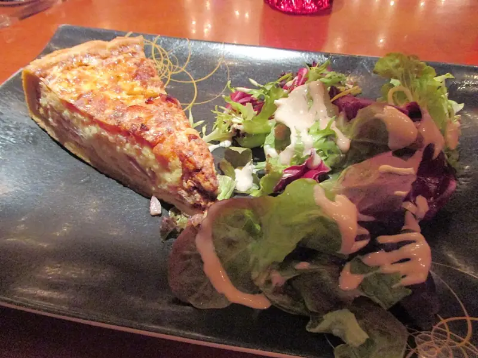

Киш лорен
Открытый пирог на слоёном тесте с беконом, сыром и сливочной заливкой
60 мин6 порц.631 ккал на порциюБ 23 · Ж 48 · У 28Европейская кухня
Открыть в приложении: порции, таймеры, список покупок
Продукты на 6 порц.
- Слоёное тесто400 г
- Бекон200 г
- Лук репчатый по желанию1 шт
- Яйцо куриное4 шт
- Сливки 20%250 мл
- Сыр твёрдый120 г
- Мускатный орех1 щеп.
- Соль1 щеп.
- Перец чёрный молотый1 щеп.
- Мука пшеничная1 ст. л.
Как готовить
- Разморозьте тесто, раскатайте на присыпанном мукой столе и выложите в форму диаметром 24-26 см, сделав бортики. Наколите дно вилкой.
- Разогрейте духовку до 200 °C (сильный жар). Выпекайте основу 10 минут, пока не подрумянится.
- Бекон нарежьте полосками и обжарьте с луком на сухой сковороде 5-6 минут до румяности.
- Взбейте яйца со сливками, солью, перцем и мускатным орехом. Сыр натрите.
- Выложите на основу бекон и сыр, залейте яичной смесью.
- Убавьте жар до 180 °C (средний жар) и запекайте 25-30 минут. Заливка должна схватиться и лишь слегка дрожать в центре.
- Дайте остыть 10 минут перед нарезкой.
Совет. Сливки берите 20-33 %, с молоком заливка не схватится. Киш хорош и холодным, его удобно брать с собой.